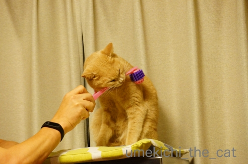
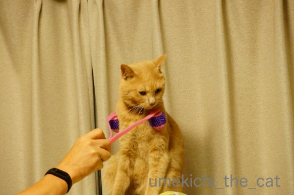
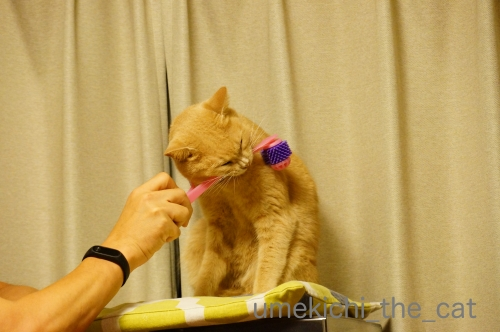
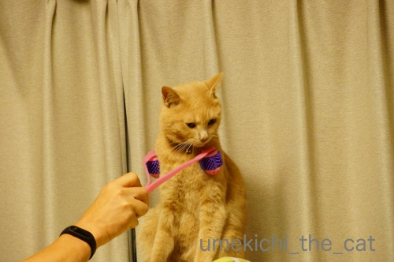

コロコロローラーで癒しの美活！？ [梅吉]
全身コロコロマッサージ for cat を買いました＾＾

まずはニオイを確認。

歯で確認も忘れませんよ。

お客様〜。
お仕事何かしら？腕の付け根あたりよくお使いになってるみたい。

お背中も凝ってるかしら?

![[猫]](https://blog.ss-blog.jp/_images_e/101.gif) がぶっ
がぶっ
でもお顔はまんざらでもないんですよ。
（16秒です＾＾）
最後の額リフトアップが美しさの秘訣？(*>艸<)
３連休明けのおっとの出張に便乗して旅行を計画していたのですが・・・
（以下覚書の経過なのでスルーしてください。結論として14日現在梅吉は元気です＾＾）
10日（水）の夕方から梅吉のトイレの様子が変。
いつもの量のおしっこをした後すぐにトイレに行って少量のおしっこ。
その後もなんどもトイレに行き数滴のおしっこを繰り返す。
先代猫の時になんども経験したトイレの異常。いやーな記憶が蘇ってきました。
頻尿は膀胱炎などの兆候の一つです。
動物病院に連絡を入れるにはもう遅い時間で翌日木曜日は病院の休診日。
幸いおしっこは出ているので様子見することにしました。
11日（木）
トイレに行く回数はますます増え梅吉も落ち着かない様子でウロウロしています。
おしっこは相変わらず出ているし色も正常。
（膀胱炎がひどくなるとファンタグレープみたいな色のおしっこが出ることがあります）
排泄時に痛がっている様子もなく食欲もあり遊ぶ気も満々。
知らない病院へ無理に連れて行くよりも家で安静と決断して様子見。
12日（金）朝からトイレは５〜6回。量は出ている。
朝一番で病院に電話をしてすぐに病院へ。
膀胱炎疑い？とのこと。
おしっこは出ているので投薬と水分を多めに取らせることにして様子見。
１w後に再診して改善がなければ検査しましょう
ただしおしっこが出なくなったらすぐに病院へ
ということになりました。
結石の場合の薬（抗生剤）と膀胱炎用の炎症止め両方の薬をもらい帰宅しました。
夕食時に投薬。夜のおしっこは定量と数分後の少量一回のみ。
13日（土）
一過性のもので症状が落ち着いたのか薬が効いたのか不明ながら
トイレの回数は少なくなり落ち着いた状態。
ささみスープで水分を多めに取らせたのでおしっこの量は多め。
ただ、処方された薬が気に入らないらしくささみに混ぜても食べなくなってしまった。
薬を舐めてみたらにがーいの。これはかわいそうだわ・・・
滅多に与えないたま伝やモンプチのパウチ高級食（笑）を買い出しに行く・・・
と、とても家を空ける心境＆状況ではなく旅行はキャンセルしました。
ホテルも梅吉のシッターさんもキャンセル料金が発生する前滑り込みセーフでキャンセル。
新幹線のチケットは払い戻し手数料が必要だったけど。
14日現在梅吉の症状は落ち着いています。
おしっこの量も正常です。
一過性のものだとすると原因はストレス？
思い当たるのは6月末から7月はじめにかけて
マンションの配管掃除やインターホン工事が重なったことくらい。
インターホンの呼び出し音を変えたことも原因の一つかもしれないと
呼び出し音は早速一番地味な音にして音量は小さくしました。
あとは普段通り家族で静かに過ごすことが一番かな・・・の３連休となりました。
寒い、暑いでも膀胱炎の兆候が出る事があるようです。
みなさんもお気をつけくださいね。
ちなみにコロコロローラー施術は症状の出る前の出来事です。
再診は19日。無事に無罪放免になるといいなぁ・・・

病院から帰宅後、たそがれる梅吉さんwww
まずはニオイを確認。

歯で確認も忘れませんよ。

お客様〜。
お仕事何かしら？腕の付け根あたりよくお使いになってるみたい。
お背中も凝ってるかしら?
でもお顔はまんざらでもないんですよ。
（16秒です＾＾）
最後の額リフトアップが美しさの秘訣？(*>艸<)
３連休明けのおっとの出張に便乗して旅行を計画していたのですが・・・
（以下覚書の経過なのでスルーしてください。結論として14日現在梅吉は元気です＾＾）
10日（水）の夕方から梅吉のトイレの様子が変。
いつもの量のおしっこをした後すぐにトイレに行って少量のおしっこ。
その後もなんどもトイレに行き数滴のおしっこを繰り返す。
先代猫の時になんども経験したトイレの異常。いやーな記憶が蘇ってきました。
頻尿は膀胱炎などの兆候の一つです。
動物病院に連絡を入れるにはもう遅い時間で翌日木曜日は病院の休診日。
幸いおしっこは出ているので様子見することにしました。
11日（木）
トイレに行く回数はますます増え梅吉も落ち着かない様子でウロウロしています。
おしっこは相変わらず出ているし色も正常。
（膀胱炎がひどくなるとファンタグレープみたいな色のおしっこが出ることがあります）
排泄時に痛がっている様子もなく食欲もあり遊ぶ気も満々。
知らない病院へ無理に連れて行くよりも家で安静と決断して様子見。
12日（金）朝からトイレは５〜6回。量は出ている。
朝一番で病院に電話をしてすぐに病院へ。
膀胱炎疑い？とのこと。
おしっこは出ているので投薬と水分を多めに取らせることにして様子見。
１w後に再診して改善がなければ検査しましょう
ただしおしっこが出なくなったらすぐに病院へ
ということになりました。
結石の場合の薬（抗生剤）と膀胱炎用の炎症止め両方の薬をもらい帰宅しました。
夕食時に投薬。夜のおしっこは定量と数分後の少量一回のみ。
13日（土）
一過性のもので症状が落ち着いたのか薬が効いたのか不明ながら
トイレの回数は少なくなり落ち着いた状態。
ささみスープで水分を多めに取らせたのでおしっこの量は多め。
ただ、処方された薬が気に入らないらしくささみに混ぜても食べなくなってしまった。
薬を舐めてみたらにがーいの。これはかわいそうだわ・・・
滅多に与えないたま伝やモンプチのパウチ高級食（笑）を買い出しに行く・・・
と、とても家を空ける心境＆状況ではなく旅行はキャンセルしました。
ホテルも梅吉のシッターさんもキャンセル料金が発生する前滑り込みセーフでキャンセル。
新幹線のチケットは払い戻し手数料が必要だったけど。
14日現在梅吉の症状は落ち着いています。
おしっこの量も正常です。
一過性のものだとすると原因はストレス？
思い当たるのは6月末から7月はじめにかけて
マンションの配管掃除やインターホン工事が重なったことくらい。
インターホンの呼び出し音を変えたことも原因の一つかもしれないと
呼び出し音は早速一番地味な音にして音量は小さくしました。
あとは普段通り家族で静かに過ごすことが一番かな・・・の３連休となりました。
寒い、暑いでも膀胱炎の兆候が出る事があるようです。
みなさんもお気をつけくださいね。
ちなみにコロコロローラー施術は症状の出る前の出来事です。
再診は19日。無事に無罪放免になるといいなぁ・・・
病院から帰宅後、たそがれる梅吉さんwww

カフェオレ色の梅吉

梅吉 2023年8月10日 永眠


梅吉と出会った譲渡会

犬猫の理由なき殺処分ゼロ
妄想広告
UMEKICHI 光

爆発的に早い！
時々攻撃的！
Thanks to Mr.Boss365
爆発的に早い！
時々攻撃的！
Thanks to Mr.Boss365

インターフォンの音の変化などもストレスになることもあるんですか
デリケートなのですね
検査結果が異常ないと良いですね
by 藤並 香衣 (2019-07-15 00:53)
コロコロ気持ち良さそうですね(^^♪
再診の結果が何ともないことを願っています。
by yamatonosuke (2019-07-15 01:43)
コロコロローラーでリフトアップか？
でも、気持ち良さそうだニャ～
ストレス溜めるな、お金貯めろ？
梅吉さんじゃ、猫に小判だから無理か（ﾟ□ﾟ）
by 英ちゃん (2019-07-15 01:49)
少しでも出てたら大丈夫！と思ってます（爆）
その代わりと言っては何ですが
結石用の療法食と膀胱炎の薬を常備してます＾＾
by ぽちの輔 (2019-07-15 07:18)
あらあらあら！！ナンテコッタ！！(ﾉД`)
猫さまは繊細ですから…人間には気にならないチョットした事がストレスになってしまうんですよね〜頻繁におトイレへ走る姿は見ていて辛くなります…(◞‸◟)
旅行は残念だけどまたの機会があります！！
どうかお薬が効いて無罪放免となりますように…梅しゃま、ご養生なされませ(^^)
お蔭様でウチのお嬢も調子が良く自宅補液になり、数値も随分と下がり落ち着いて来ています。
油断は禁物ですが、引続き頑張りま〜す！！
by くつしたにゃん (2019-07-15 07:35)
先代ｓａｒａが膀胱炎になりやすく
再発を繰り返しました・・・
何回もトイレに行く様子を見ているのも
辛いですね・・
って一番辛いのは梅吉さんですが！
ｓａｒａは何回も膀胱炎を繰りかえし
（繰り返すと抗生物質が効かなくなり
腎盂腎炎になると言われたので）
膀胱の形がいびつなのが一因かも？と
一部を切除する手術をしました！
今は薬が効いて落ち着いているようなので
このまま落ち着きますように♪
by きぃ (2019-07-15 08:21)
梅吉さんお薬効果出てるとよいですね。
by ニコニコファイト (2019-07-15 09:22)
コロコロローラはお顔は平気なのですね！
薬が効いたみたいで少し安心ですね、週明けの再診で問題ないと良いですね(^^)
by ma2ma2 (2019-07-15 09:25)
こんにちは。
コロコロマッサージの猫用あるんですね？カミカミで硬さも確認ですね。
動画、梅吉君！！気持ち良さそう、リフトアップ？無理矢理感が素敵です（笑）
膀胱炎疑い・・・一過性のものだと良いですね。ストレス？気を付けたいです。
ストレス？小生猫、声かけても通常尻尾を小さく振るのですが、反応が全くない時があり。
ストレスが溜まると、爆睡して解消している感じです。
旅行残念ですが、梅吉君のためには良かったと感じます。
無罪放免！！願ってます！！踏ん張れ梅吉君！？(=^･ｪ･^=)
by Boss365 (2019-07-15 11:42)
コロコロマッサージで気持ち良い顔の梅吉さん。
額のアップでご満悦ですね。
というところから、頻尿ですか。
病状！何ということでしょう。
おやすみなどが重なって、心配でしたね。
14日は元気だとのこと、安心しています。
一過性のものであることを祈ってます。
by kiki (2019-07-15 15:28)
コロコロマッサージ、これは最初おもちゃと思いそう♪
でも気持ちよさそうなお顔になりましたね～＾＾
軽い膀胱炎だったのかな？
おしっこは大問題になり得るから、心配ですね。
旅行は残念でしたけど、そんな状態の梅吉さんにストレス与えられないし。
でもそれで今落ち着いているようでよかったです。
お大事に＾＾
by sana (2019-07-15 15:40)
膀胱炎、落ち着いて来ているようで何よりです。
夜間や休診日は本猫への負担を考えると悩みますよね。
一度だけ焦って夜間救急へタクシーで行ったことありますが、長時間待たされて治療は最低限、費用は莫大。ヒト・猫共に疲れ果てました。
なので爪を折った時は、出血が止まったのでエリカラつけて翌朝まで待ちました。
インターホンは「知らない人が来る」という合図なのでウチのも大嫌い。超がつくビビリ猫なので心配の種は尽きません。
何がストレスになっているのか教えて欲しいと心から思います^^;
旅行は残念でしたが、いつも通りがきっと一番のお薬。
無罪放免をお祈りしています。どうぞお大事に。
コロコロマッサージ、ちぃさんと共用？！と思ったら梅吉さん専用なんですね！
それ以上キレイになってどうするの～～っ^^
by ゆきち (2019-07-15 16:55)
お顔のコロコロさんは 至福の時ですね 見ているだけでも幸せになれそうです(^^)
旅行は残念でしたが 寄り添ってあげるのが一番ですね このまま状態が良くなると良いですね お大事になさってくださいね
by チャー (2019-07-15 17:12)
梅吉さん、美顔に目覚めた?! ますますいいオトコになっちゃいますねぇ。
そして、膀胱炎疑い、お疲れさまでした。
もしかして、梅吉さんは、旅行を察して、さみしくなったのかも?!
梅吉さんとゆっくりまったりお過ごしくださいませ～。
by ChatBleu (2019-07-15 17:51)
心配ですねぇ
by (。・_・。)２ｋ (2019-07-15 17:52)
そうそう。前記事の梅吉さんの動画、うちのパートナーに見せたら、メッチャウケました。あの、氷を触った後に手をびくっとひっこめてプルプルさせるのがツボだったみたいです^m^
by ChatBleu (2019-07-15 17:53)
コロコロで梅吉さんは恍惚状態ですね。
膀胱炎、このあいだ、チビもなりました。
何度か病院に通いました。薬をもらって今は元気に遊び惚けています。
梅吉さん、良くなるといいですね。
by riverwalk (2019-07-15 22:09)
コロコロ気持ち良さそうですね♪
目がうつろになってますね。
検査結果が問題ないことを祈ってます。
by yes_hama (2019-07-15 22:12)
症状落ち着いてるようなので、ちょっと安心。
ストレスだったのかもしれないよねー。
旅行は残念だったけど、でもやっぱり気が気じゃないから
キャンセルで正解だよね。
19日で無罪放免になること祈ってます。
梅吉くん、たっぷりお水飲んでママに甘えて
ストレス解消してね！！！
by リュカ (2019-07-15 22:16)
そういう事情だったのですね＠旅行
またの機会にたっぷりと取り戻してください。
それよりも梅吉さん快方に向かっているようでよかった。
さすがに具合の悪いわが子をシッターさんに任せて
旅行には行けませんよね。
コロコロマッサージ気持ちよさそうですなぁ～
ちょいと白目っぽくなるところがツボっちゃいました(笑
うちもNaoちゃんが普通のゴミ用のコロコロを転がすだけで
それで背中をコロコロしてぇ～っとすっ飛んできます(;^_^A
by marimo (2019-07-16 07:26)
きっと3連休ちぃさんと一緒にいたかったんですよ(^_-)-☆
19日で通院終わりますように！
by palpal (2019-07-16 09:04)
このコロコロローラーはfor catなのですね(笑)
うちも美顔器のコロコロがありますが、わりと
気に入って顔を突き出してきますｗｗ
毛むくじゃらなのに、美顔もないだろーと(笑)
あらーー。ちぃさんもご旅行キャンセルですか！
実は私も淡路島＆大塚美術館へ行く予定だったのですが
私の体調がイマイチなのでキャンセルとなりました(ﾉω･､)
１泊目のホテルは20％のキャンセル料を取られましたが
仕方なし...
それより梅ちゃん大変でしたね！うちも尿路結石をしたので
トイレ具合はいつもチェックしています。梅ちゃんはきちんと
見ていてくださるちぃさんがいらっしゃるから軽めで済んで
よかったです。今度の通院で無罪放免となりますように★
by カトリーヌ (2019-07-16 13:55)
旅行もキャンセルでしたかー。残念！
ちょっとしたことでもストレスを溜めるんですね。
ゆきちさんのコメントの、ドアチャイムは
知らない人が来た合図というのに
なるほどなー。と思いました。
無事、無罪放免になりますようにー！！
by よーちゃん (2019-07-17 08:51)
ありゃりゃー大丈夫かなー。
なんともなくて、無事にまたコロコロ満喫できるようになりますように。
by liang (2019-07-17 20:49)
梅吉ちゃん！
その後どうですか？
とてもとても心配です。
旅行もキャンセル、わかります。
うちもそうでした。
どうかお医者さんにみてもらっていることでしょうから、ちゃんとお利口に治療してね梅吉ちゃん。
元気になっておしっこちゃんとしてコロコロ？？でいっぱい遊んでちょうだい！！
by ake_i (2019-07-17 22:38)